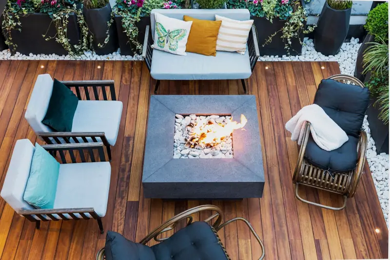
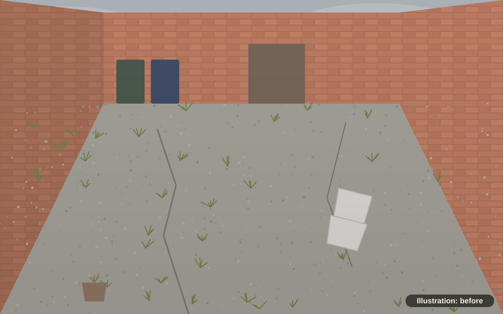
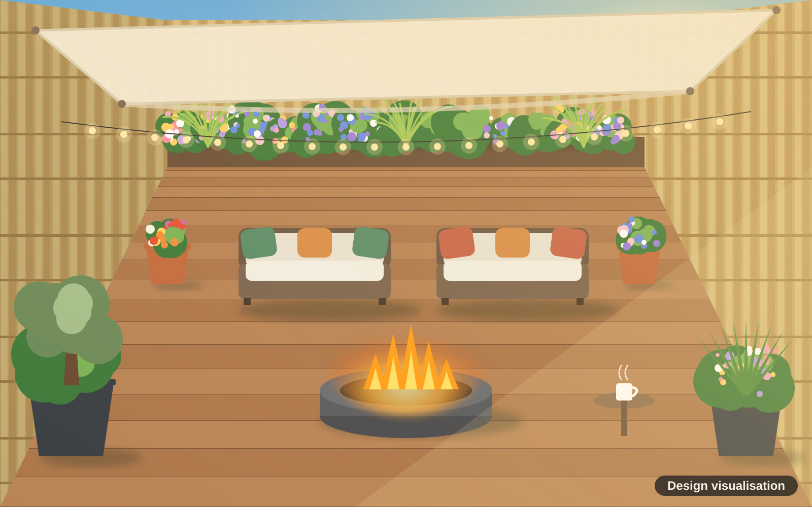
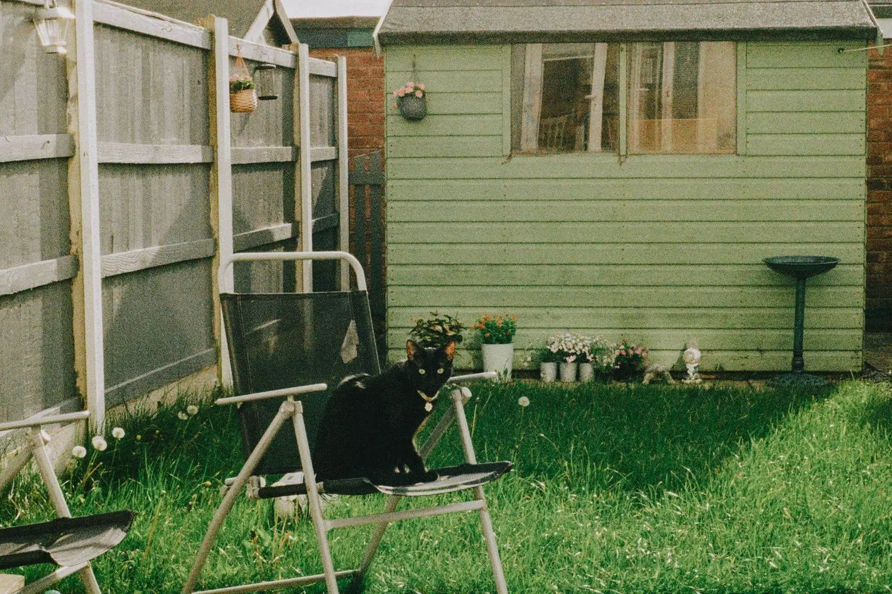
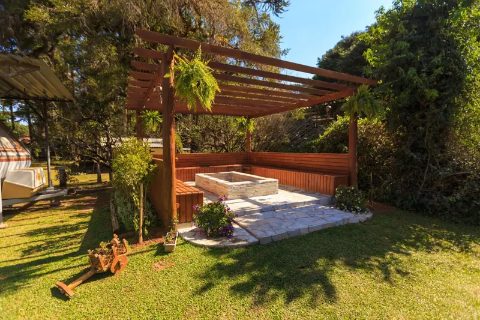

Terraces and courtyards
Small garden, big feeling
A bare yard behind a terraced house turned into a cosy outdoor room for a cup of tea in the morning and a fire on a cool evening.
The transformation
Drag to see the change
Small doesn't have to mean dull. With good screening, the right deck and a focal point, a terrace or courtyard garden can feel like a private retreat.


BeforeDesign visualisationThe "before" is an illustration and the "after" is a design visualisation of a proposed design, not a photo of a finished job.
What's in this design
The details that make it
- Bamboo screening on all three walls for warmth and privacy
- Hardwood-look deck that is level, dry and easy to sweep
- Fire pit at the centre so the evenings go on longer
- Sail awning and festoon lights for shade by day and glow by night
- Big planters with an olive tree, grasses and colour all summer
- Two outdoor sofas and a little side table for your tea
Ideal for: Terraced houses, town houses, courtyards and new builds with a small plot.
Get a free quoteReal gardens for inspiration
The kind of change we make
Stock photos of real gardens like this, to help you picture yours.

Stock photo: beforeStock photo: afterIllustrative pairing: these are stock photos of two different gardens, showing the kind of change we make. They are not a Fernhill project.
 Stock photo
Stock photo
Stock photoReady to see what your garden could be?
Tell us a little about your space. Sam will come round, listen, and send a clear written quote. No cost, no pressure.